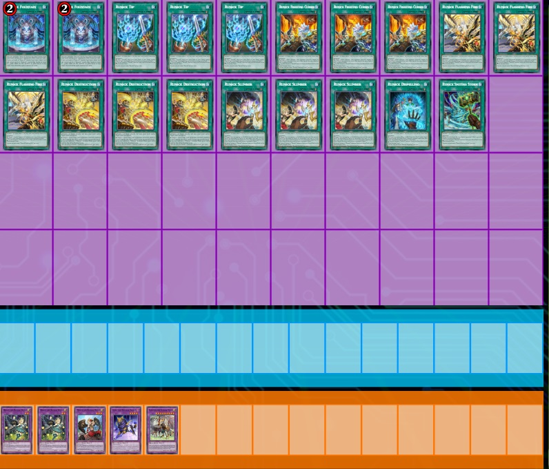

"Runick" is an archetype of Main Deck Spells and Extra Deck Fusion Monsters introduced in Deck Build Pack: Tactical Masters.
The archetype is themed after Norse mythology and action RPG video games, seen from a first person perspective.
The artwork of several of their cards also have monsters and characters seen in the art of the cards in the "Generaider" archetype, implying a strong lore connection between the two.
The archetype is themed after Norse mythology and action RPG video games, seen from a first person perspective.
The artwork of several of their cards also have monsters and characters seen in the art of the cards in the "Generaider" archetype, implying a strong lore connection between the two.
The Core of the Deck revolves around playing enough Runick Spells to start with 2 in your 5-card opening hand.
The usual count is 17 Quick-Play Spells + 2 Field Spells in a 40 Card Deck.
Extra Deck Monsters are variant dependant but the most important Monsters are Hugin and Geri as they help you keep the Field Spell in rotation.
The usual count is 17 Quick-Play Spells + 2 Field Spells in a 40 Card Deck.
Extra Deck Monsters are variant dependant but the most important Monsters are Hugin and Geri as they help you keep the Field Spell in rotation.
